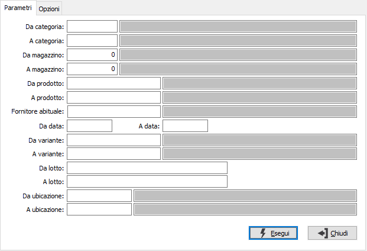
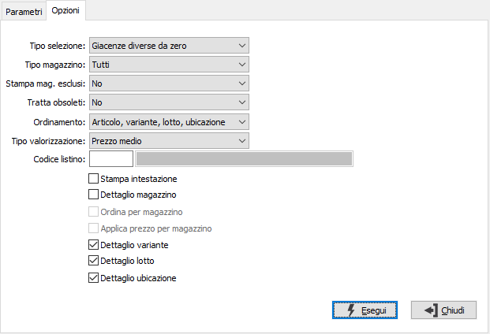

Analisi dettaglio giacenze
Il programma permette di ottenere analisi giacenze incrociate per articolo/variante/ubicazione/lotto; si configura chiaramente in base al tipo di installazione, per cui le selezioni ed i dettagli per variante, per lotto o per ubicazione sono possibili solo se installati i rispettivi moduli.
L’analisi può essere ottenuta sia a quantità che a valore, scegliendo il tipo di valorizzazione da applicare alla giacenza; la procedura si articola su due pagine video: una per i parametri di selezione, l'altra per le opzioni di stampa.

DA CATEGORIA: eventuale codice della categoria merceologica da cui si vuole iniziare la selezione di analisi. Sul campo è attiva la ricerca (F9) sulla tabella Categorie merceologiche.
A CATEGORIA: eventuale codice della categoria merceologica con cui si vuole concludere la selezione di analisi. Sul campo è attiva la ricerca (F9) sulla tabella Categorie merceologiche.
DA MAGAZZINO: eventuale codice del magazzino da cui si vuole iniziare la selezione di analisi. Confermando a vuoto, l’analisi inizia dal primo magazzino valido. Sul campo è attiva la ricerca (F9) F9 sulla tabella Magazzini.
A MAGAZZINO: eventuale codice del magazzino con cui si vuole concludere la selezione di analisi. Confermando a vuoto, l’analisi termina con l’ultimo magazzino valido. Sul campo è attiva la ricerca (F9) sulla tabella Magazzini.
DA PRODOTTO: eventuale codice dell'articolo, presente in anagrafica Prodotti, da cui si desidera iniziare la selezione dei movimenti di magazzino. Confermando a vuoto, la selezione inizia con il primo prodotto valido. Sul campo è attiva la ricerca (F9) sull’anagrafica prodotti.
A PRODOTTO: eventuale codice dell'articolo, presente in anagrafica Prodotti, a cui si desidera terminare la selezione dei movimenti di magazzino. Confermando a vuoto, la selezione termina con l’ultimo valido. Sul campo è attiva la ricerca (F9) sull’anagrafica prodotti.
FORNITORE ABITUALE: eventuale codice del fornitore abituale dei prodotti con cui si desidera effettuare la selezione dei prodotti. Sul campo è attiva la ricerca (F9) sull’anagrafica fornitori.
DA DATA: data da cui deve iniziare l’analisi dei movimenti di magazzino per gli articoli precedentemente selezionati. Il campo è obbligatorio.
A DATA: eventuale data con cui si desidera terminare l’analisi dei movimenti di magazzino per gli articoli precedentemente selezionati. Il campo è obbligatorio.
DA VARIANTE: codice della variante, da cui si desidera iniziare la selezione di analisi. Confermando a vuoto, la selezione inizia con la prima variante valida. Sul campo è attiva la ricerca (F9) sull’anagrafica varianti.
A VARIANTE: codice della variante con cui si desidera terminare la selezione di analisi. Confermando a vuoto, la selezione termina con l’ultima variante valida. Sul campo è attiva la ricerca (F9) sull’anagrafica varianti.
DA LOTTO: codice del lotto, da cui si desidera iniziare la selezione di analisi. Confermando a vuoto, la selezione inizia con il primo lotto valido. Sul campo è attiva la ricerca (F9) sull’anagrafica lotti.
A LOTTO: codice del lotto con cui si desidera terminare la selezione di analisi. Confermando a vuoto, la selezione termina con l’ultimo lotto valido. Sul campo è attiva la ricerca (F9) sull’anagrafica lotti.
DA UBICAZIONE: codice dell'ubicazione, da cui si desidera iniziare la selezione di analisi. Confermando a vuoto, la selezione inizia con la prima ubicazione valida. Sul campo è attiva la ricerca (F9) sull’anagrafica ubicazioni.
A UBICAZIONE: codice dell'ubicazione con cui si desidera terminare la selezione di analisi. Confermando a vuoto, la selezione termina con l'ultima ubicazione valida. Sul campo è attiva la ricerca (F9) sull’anagrafica ubicazioni.

TIPO SELEZIONE: combo box per definire il tipo di esistenze da considerare. Valori ammessi: Tutti; Giacenze diverse da zero; Giacenze negative; Sottoscorta.
TIPO MAGAZZINI: combo box per definire il criterio di selezione dei magazzini. Valori ammessi: Nessuna; Di proprietà; Di terzi.
STAMPA MAGAZZINI ESCLUSI: indica se nella selezione si desidera i magazzini normalmente esclusi dalla stampa dell’inventario. Valori ammessi: No, Si, Solo esclusi.
TRATTA OBSOLETI: definisce come se includere nell'analisi anche gli articoli obsoleti: Si, No, Solo obsoleti.
ORDINAMENTO PER: combo box per definire i criteri di ordinamento. Valori ammessi: Per articolo/variante/lotto/ubicazione; Per articolo/variante/ubicazione/lotto.
TIPO VALORIZZAZIONE: definisce il metodo di valorizzazione dei movimenti. Valori possibili:
Prezzo medio
Prezzo ultimo carico
Costo di mercato
Prezzo medio di vendita
Prezzo di listino
CODICE LISTINO: Indica il codice del listino, presente sulla tabella Listini, da utilizzare in caso di utilizzo della valorizzazione a prezzo di listino. Sul campo sono attive le funzioni di ricerca (F9).
STAMPA INTESTAZIONE: Indica se stampare una pagina con i criteri di selezione della stampa, l’operatore che l’ ha eseguita, la data e l’ora (casella con segno di spunta).
DETTAGLIO MAGAZZINI: check box per definire i criteri di visualizzazione in caso di presenza in più magazzini dello stesso prodotto. Valori ammessi: vuoto = visualizza il totale dei magazzini; spunta = visualizza analiticamente i singoli magazzini.
ORDINA PER MAGAZZINO: in caso di dettaglio magazzino, consente di ordinare i dati in stampa per codice magazzino (casella con segno di spunta).
APPLICA PREZZO PER MAGAZZINO: attivo solo se si imposta il prezzo medio o costo ultimo nella casella "Tipo valorizzazione" e si attiva la stampa del dettaglio di magazzino: il prezzo in oggetto viene calcolato sul singolo magazzino e non generico per prodotto (casella con segno di spunta). In mancanza del prezzo medio/costo ultimo verrà utilizzato il prezzo medio/costo ultimo complessivo dell'articolo.
DETTAGLIO VARIANTE: definisce se effettuare la stampa dettagliata delle singole varianti (casella con segno di spunta).
DETTAGLIO LOTTO: definisce se effettuare la stampa dettagliata dei singoli lotti (casella con segno di spunta).
DETTAGLIO UBICAZIONE: definisce se effettuare la stampa dettagliata delle singole ubicazioni (casella con segno di spunta).